Table Tab Tutorial#
Introduction#
This tutorial uses data in the file demo.hdf5. You can generate this file by following the instructions on Making the demo HDF5 file.
The first step is to open demo.hdf5 in hdf5view using one of the methods described in Basic Usage. When you have opened the file, the hdf5view application window should look like this:
The initial state of the hdf5view application after opening the file “demo.hdf5”. For a description see Initial State of the Application.#
Now click the arrow (or double-click the folder) in the File Structure table to expand the tree view, and left-click on the dataset 3columns to select it. The application window should now look like this:
The state of the hdf5view application after selecting the dataset 3columns in the File Structure of demo.hdf5.#
We can see from the File Structure table that the shape of the dataset 3columns is (91, 3) i.e. it is a 2D dataset with 91 rows and 3 columns:
The shape, number of dimensions (ndim) and data type (dtype) of the dataset are visible from the Dataset table:
Changing the Slice#
The Slice table has a default value for each tab type (Table, Plot or Image) and dataset shape. The default slice for the Table tab of a 2D dataset like 3columns is (:, :), meaning that all data are displayed in the Table (in the image below only rows up to index 22 are shown).
Slice |
Table tab |
|---|---|
| 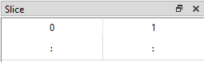 | 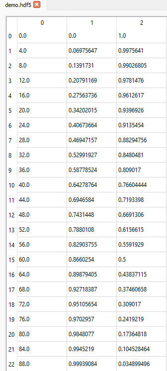 |
The Default Slices on the Table Tab are intended as a sensible starting point but we can also change the slice to view the data in different ways.
Adding a Start value#
If we want to display data from the 11th row (index = 10) onwards for all columns, we can set the slice like this (10:, :):
Slice |
Table tab |
|---|---|
| 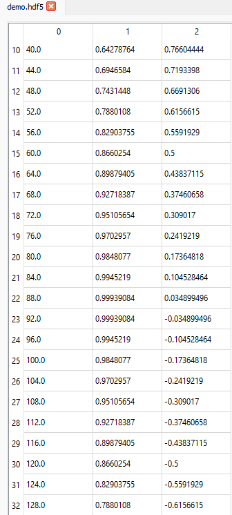 |
Start and Stop values#
If we want to display data from the 11th row (index = 10) up to and including the 31st row (index = 30) for all columns, we can set the slice like this (10:31, :):
Slice |
Table tab |
|---|---|
| 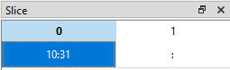 | 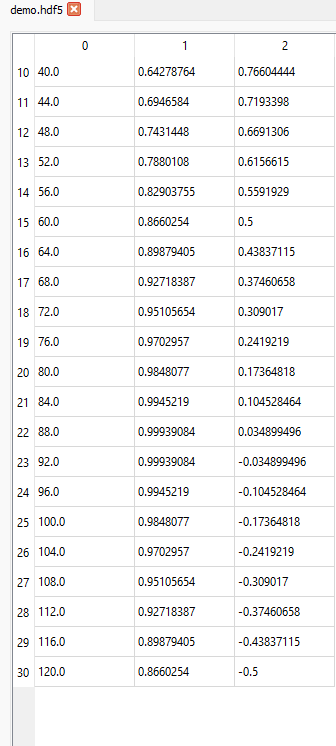 |
Start, Stop and Step values#
If we want to display data from the 11th row (index = 10) up to and including the 31st row (index = 30) in steps of 2 (i.e. every other row) for all columns, we can set the slice like this (10:31:2, :):
Slice |
Table tab |
|---|---|
| 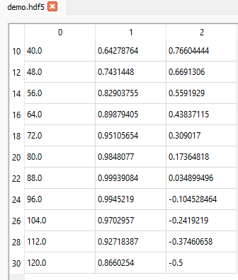 |
Selecting Several Columns#
The slicing rules for rows are also valid for columns (or any other dimension of the dataset). If we want to display data from the 11th row (index = 10) up to and including the 31st row (index = 30) in steps of 2 (i.e. every other row) but only for the 2nd and 3rd columns (indices 1 and 2), we can set the slice like this (10:31:2, 1:):
Slice |
Table tab |
|---|---|
| 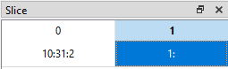 | 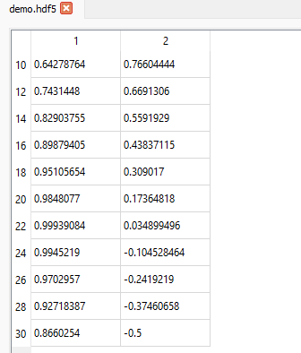 |
Selecting a Single Value#
If we want to display the value in the 17th row (index = 16) in the 2nd column (index 1), we can set the slice like this (16, 1):
Slice |
Table tab |
|---|---|
| 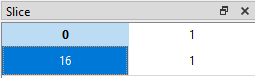 | 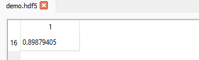 |
Datasets with Compound Names#
Some datasets have compound names. This means that every item consists of a set of data. Each element in the set may have a different data type and is described by a compound name.
In hdf5view, navigate to and select the dataset compound_names in the file demo.hdf5. In the File Structure table, the shape of the dataset appears as (91,). If we look at the Dataset table, we can see that the entry for shape is coloured red. This indicates that a dataset with compound names is active. The effective number of columns, i.e. the number of compound names for each item, is shown as ncols=3, in this case. The compound names (“x”, “sin x” and “cos x”) and associated data types (“<u2”, “<f4” and “<f4”) can be seen as tuples in the dtype row of the Dataset table.
File Structure |
Dataset |
|---|---|
| 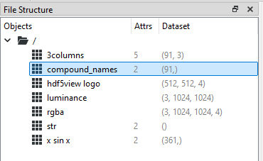 | 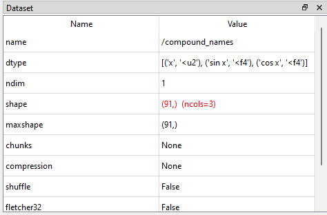 |
In the main tabbed area, the default Table tab shows the compound names as column names.
Slicing Datasets with Compound Names#
The Slice table shows an axis for each shape axis of the dataset and an extra axis corresponding to the compound names. For the node compound_names the dataset is 1D, so the Slice table is therefore 2D. We select rows in the dataset using the first axis and column indices corresponding to the compound names in the last axis.
The slicing behaviour is similar to that for any other dataset. For example, if we want to show rows with indices 15 up to and including 25 for the columns corresponding to the compound names x and cos x (indices 0 and 2), we set the Slice table to be (15:26, ::2):
Slice |
Table tab |
|---|---|
| 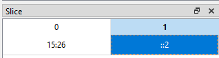 | 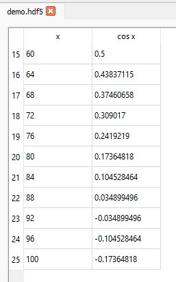 |
Default Slices on the Table Tab#
On selecting a dataset in the File Structure table, the Slice table adopts certain default values depending on the shape of the dataset. These default values are intended to act as a sensible starting point for displaying data in the Table tab. You can then change the Slice as needed.
In general, the Table tab shows a 2D slice of the data corresponding to the last two axes of the dataset. Thus for a dataset with ndim = 2, the slice shown is (:, :) and for a dataset with ndim = 6, the slice shown is (0, 0, 0, 0, :, :).
The exceptions to this are as follows:
ndim = 0, e.g. an “object” type dataset comprising a string. A single cell containing the string (or other data) is displayed in the
Tabletab.ndim = 1. All the data are displayed in the
Tabletab.ndim = 1 with compound names. This is treated as a 2D dataset where the columns correspond to the compound names. All data are shown.
ndim > 2 and shape[-1] in [3, 4]. These are treated as arrays of rgb or rgba image(s) and the last three axes are chosen for display in the
Tabletab. For example, a dataset with ndim = 6 and shape[-1] in [3, 4], the slice shown is (0, 0, 0, :, :, :). In this way, the rgb(a) values for each pixel can be easily inspected.
The default slices on the Table tab can be summarised as follows:
ndim |
condition |
interpretation |
default slice |
|---|---|---|---|
0 |
N.A., all data shown |
||
1 |
(:,) |
||
compound names |
2D array |
(:, :) |
|
2 |
(:, :) |
||
> 2 |
shape[-1] in [3, 4] |
rgb or rgba image(s) |
([0] * (ndim - 3) + [:, :, :]) |
shape[-1] Not in [3, 4] |
([0] * (ndim - 2) + [:, :]) |
You can test these default values by selecting different datasets in the file demo.hdf.